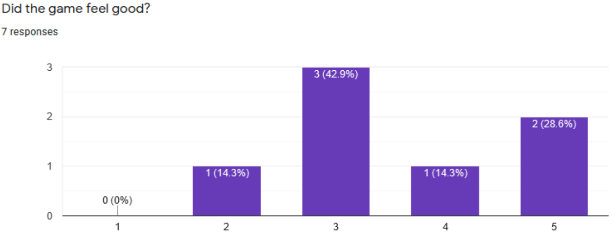
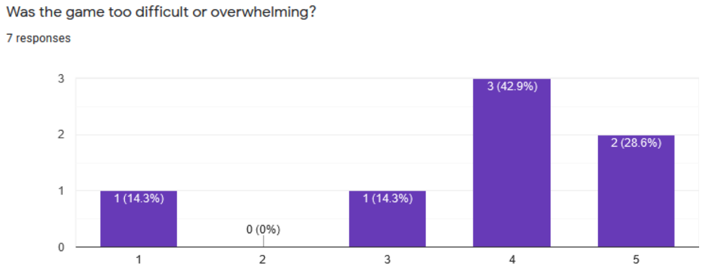
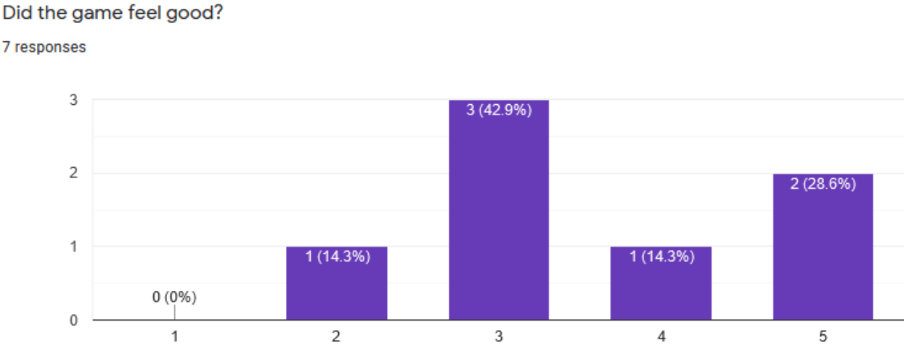
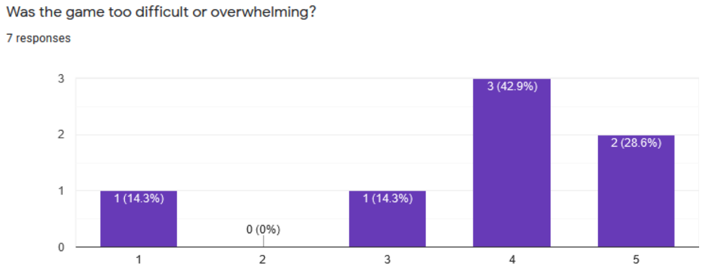

Description:
Our game is about a single, lonely white blood cell that must protect the body from viruses
attempting to invade. The
blood cell has only one weapon in it's arsenal: the all powerful antibodies! The white blood cell must
destroy the
viruses by shooting antibodies at them. In the body are many blood cells which the viruses are trying to
infect. If too
many get infected the body will be overrun. Grab power ups to help the white blood cell eliminate the
enemies, but be
aware that power ups only last a short amount of time while giving great power. Our game offers two
modes: Campaign and
Survival. In Campaign mode, expect to fight through a series of increasingly-difficult levels. In
Survival mode, the
battle of white blood cells and the body is endless, so see how long you can survive before being taken
over!
Our game aligns with the theme of exponential because the infection in our game has exponential-like
growth and the
aesthetics of our game are based on the idea of a virus spreading.
Credits
Adam Snyder -- Graphics and sound
Daniel Smith -- Game mechanics
Antonio Yun -- Game design and UI
References
Music:
https://www.freesfx.co.uk/Category/Technological/231
Cool Storm
https://www.freesfx.co.uk/Category/Electronica/208
Background picture for intro scene
https://www.freepik.com/free-vector/realistic-viruses-background_5971309.htm
Attribution:Background vector created by
macrovector - www.freepik.com
Background for death screen
Lynn Greyling (publicdomainpictures.net)
https://www.needpix.com/photo/download/1388565/background-texture-red-red-textured-surface-free-pictures-free-photos-free-images-royalty-free-free-illustrations
CoronaVirus Background
https://imgur.com/CYodxCn
Background for settings
https://unsplash.com/photos/BbP7rqIGB3c
Photo by CDC on Unsplash
Team Reflection
Our team communicated well. We met regularly, made all of our deadlines, updated our Trello board
frequently, and otherwise were well organized. Everyone was willing to do their part, including meeting at
inconvenient times and staying up late to work on CSS385. I don’t remember any arguments or significant
friction between our members. We always collaborated to finish the game, working towards the goal of
improving the project.
Priorities if we had 2 more weeks:
- Add a leaderboard so that players could compete with each other for high scores. We found that some
people who play the current version want to compare scores, so this seems like a logical inclusion
- Add more features to levels such as walls. Walls and other features would allow us to design more
distinct levels
- Different enemies such as bacteria or prions. Different enemies would add variety to the game and allow
us to design more complex scenarios
- Make enemies mutate
- Make scenarios with specific objectives
- Implement a storyline with a secret twist


 


